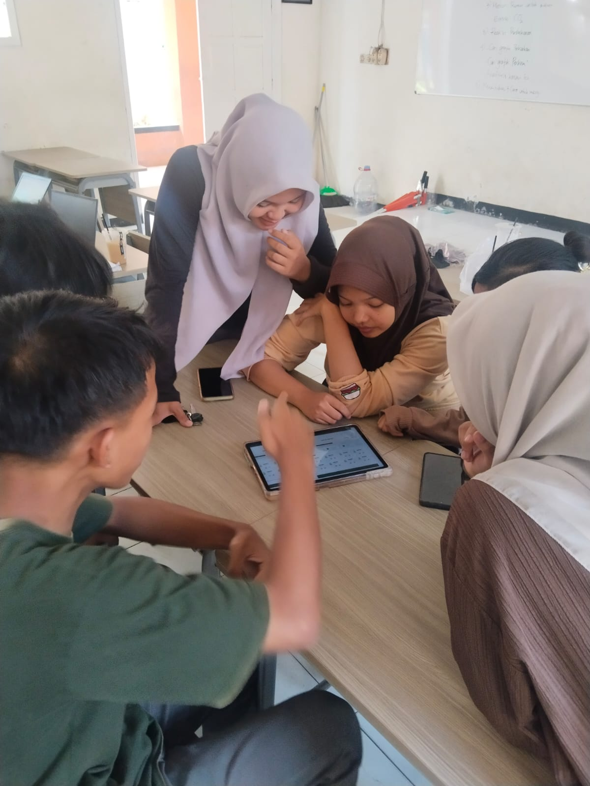
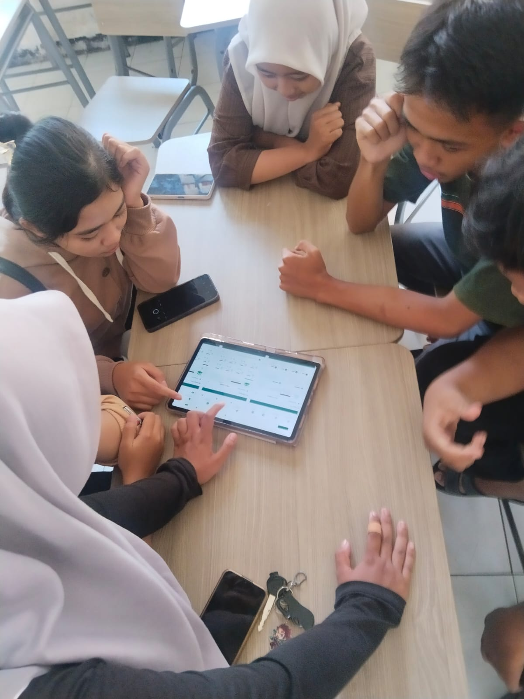
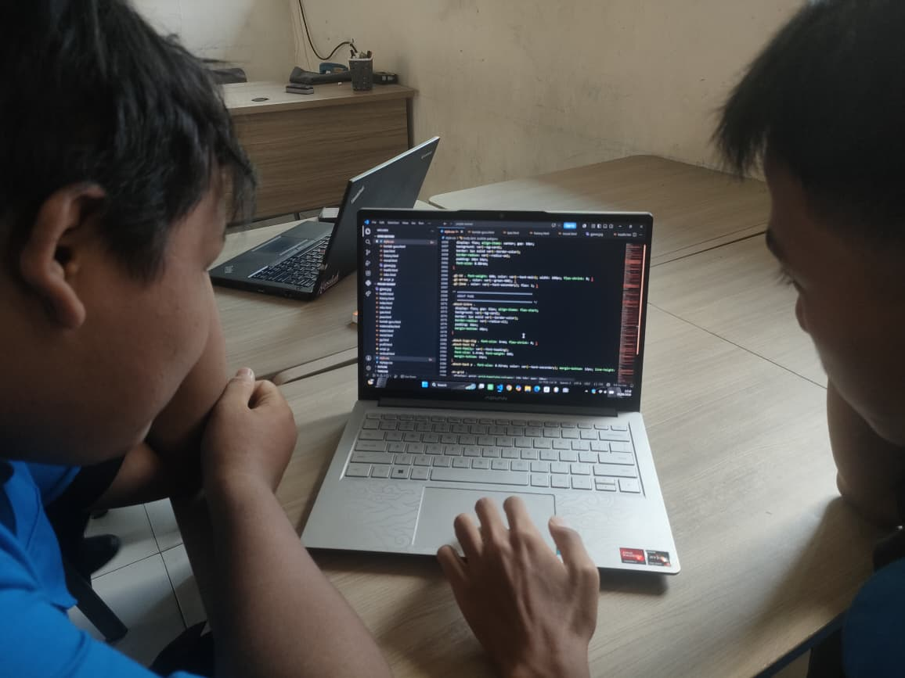

Struktur kerja dan tanggung jawab masing-masing anggota dalam proyek CarbonTrace


6 siswa bekerja sama membangun platform edukasi jejak karbon yang terintegrasi
Rincian tugas teknis dan materi setiap anggota dalam proyek CarbonTrace
| No | Nama | Peran | Tugas & Tanggung Jawab | Halaman / Mapel | Status |
|---|---|---|---|---|---|
| 💻 Tim Coding | |||||
| 1 | FANDI | Ketua · Full-stack Dev |
• Merancang struktur & navigasi keseluruhan situs • Membuat halaman Beranda, Materi, About, Pembagian Tugas • Menjaga konsistensi style.css dan variabel desain• Mengintegrasikan semua halaman dan script.js • Testing, debugging, dan review akhir seluruh web |
index.html materi.html about.html pp.html style.css script.js | Ketua |
| 2 | ZHUAN | Full-stack Dev |
• Membangun halaman Kalkulator Karbon beserta logika JS • Membuat halaman Sejarah Emisi (timeline interaktif) • Mengembangkan halaman Tips Sehat, Biografi, Moral, Basa Jawa • Membuat halaman Dokumen, Profil Siswa, Kontak Guru • Memastikan responsivitas dan dark mode berjalan di semua halaman |
calculator.html calculator.js history.html health.html biography.html moral.html jawa.html dokumen.html profil.html kontak-guru.html | Pengembang |
| 📊 Tim Materi & PPT | |||||
| 3 | FRIDA | Penyusun Materi |
• Menyusun materi dan PPT Bahasa Indonesia (Biografi Tokoh Lingkungan) • Menyusun materi dan PPT Sejarah (Revolusi Industri & Emisi Karbon) • Menyusun materi dan PPT PJOK (Tips Hidup Sehat & Ramah Lingkungan) • Menyusun materi dan PPT Agama (Pesan Moral Menjaga Lingkungan) |
Bahasa Indonesia Sejarah PJOK Agama | PPT / Materi |
| 4 | FINA | Penyusun Materi |
• Menyusun materi dan PPT Matematika (Pemodelan Fungsi Linear Emisi) • Menyusun materi dan PPT Informatika (Flowchart & Dokumentasi Proyek) • Menyusun materi dan PPT Muatan Lokal (Pacelathon Basa Jawa) • Menyusun materi dan PPT DPK PPLG (Rekayasa Perangkat Lunak) |
Matematika Informatika Muatan Lokal DPK PPLG | PPT / Materi |
| 5 | LIDIA | Penyusun Materi |
• Menyusun materi dan PPT Pendidikan Pancasila (Gotong Royong & Lingkungan) • Menyusun materi dan PPT Seni Budaya (Wireframe & Estetika Desain Web) • Menyusun materi dan PPT Projek IPAS (Sains & Lingkungan Hidup) • Menyusun materi dan PPT Bahasa Inggris (Kosakata & Teks Lingkungan) |
Pendidikan Pancasila Seni Budaya Projek IPAS Bahasa Inggris | PPT / Materi |
| 6 | IMEY | Penyusun Materi |
• Menyusun materi dan PPT PABP (Nilai Agama dalam Pelestarian Alam) • Menyusun logbook proyek dan laporan akhir kegiatan • Menyusun materi dan PPT tentang Profil Kelompok & Anggota Tim • Menyusun daftar referensi & sumber data seluruh materi CarbonTrace |
PABP Logbook Profil Tim Referensi | PPT / Materi |
Dokumentasi kegiatan peer debugging antar anggota tim dalam menyelesaikan kendala error kode

Pada saat proses pembuatan tampilan website, awalnya desain yang diharapkan tidak muncul sesuai dengan yang telah dirancang. Beberapa elemen terlihat tidak memiliki styling, seperti warna, ukuran, dan posisi yang tidak berubah meskipun kode CSS sudah ditambahkan.
Fandi dan zhuan selaku yang bertugas di bagian program berdiskusi untuk menemukan letak kesalahan logika. Lalu kode diperiksa di Visual Studio Code dengan menelusuri bagian CSS. Ditemukan bahwa beberapa class ditulis tanpa tanda titik (.). Garis peringatan pada editor membantu mengidentifikasi kesalahan tersebut. Setelah itu, dilakukan pengecekan antara HTML dan CSS untuk memastikan kesesuaian nama class..
Lalu Fandi dan Zhuan menambahkan tanda titik (.) pada setiap pemanggilan class di CSS. Setelah diperbaiki, style kembali diterapkan dengan benar dan tampilan website menjadi rapi serta sesuai desain yang diinginkan. Masalah berhasil diselesaikan dan tidak muncul error lagi.
Jadwal kerja selama 6 minggu pengembangan CarbonTrace
| No | Periode | Tahap | Kegiatan | Kendala | Solusi |
|---|---|---|---|---|---|
| 1 | Hari-ke 1 | Perencanaan | Diskusi konsep, pembagian tugas, pembuatan wireframe & struktur folder | Kesulitan menentukan fitur prioritas dan struktur navigasi yang tepat | Diskusi kelompok intensif dan pembuatan wireframe sederhana sebelum mulai koding |
| 2 | Hari-ke 2 | Desain Sistem | Pembuatan style.css, komponen navbar, footer, dan template halaman dasar | Konsistensi warna dan font antar halaman sulit dijaga secara manual | Membuat variabel CSS global di style.css agar semua halaman otomatis seragam |
| 3 | Hari-ke 3 | Pengembangan Koding | Coding semua halaman HTML/CSS/JS oleh Fandi & Zhuan | Logika kalkulator karbon kompleks dan tampilan tidak konsisten di berbagai ukuran layar | Pemisahan file JS per halaman dan penggunaan CSS Grid/Flexbox untuk responsivitas |
| 4 | Hari-ke 4 | Penyusunan Materi | Frida, Fina, Lidia, Imey menyusun materi & PPT masing-masing 4 mapel | Materi dari berbagai mapel sulit diselaraskan dengan tema lingkungan hidup | Koordinasi via grup chat dan pembagian template PPT seragam agar konten terhubung |
| 5 | Hari-ke 5 | Integrasi & Testing | Menghubungkan semua halaman, uji responsivitas, dark mode, perbaikan bug | Beberapa halaman mengalami konflik style dan dark mode tidak konsisten | Review bersama menggunakan browser DevTools dan perbaikan variabel CSS secara terpusat |
| 6 | Hari-ke 6 | Finalisasi | Review akhir, penyusunan dokumen, logbook, latihan presentasi | Waktu presentasi terbatas dan anggota belum terbiasa menjelaskan aspek teknis | Latihan presentasi bersama dan pembagian segmen presentasi sesuai bidang masing-masing |
Mulai dengan menghitung emisi harianmu menggunakan Kalkulator Karbon CarbonTrace.
🧮 Buka Kalkulator — Gratis